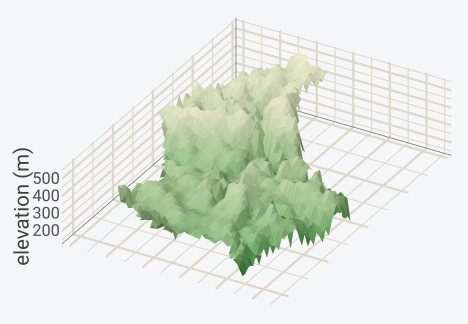
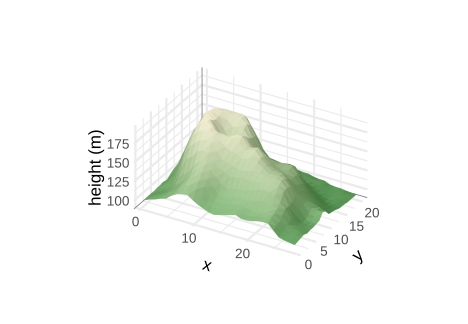
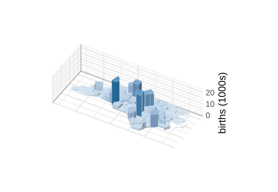
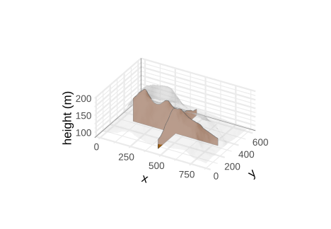
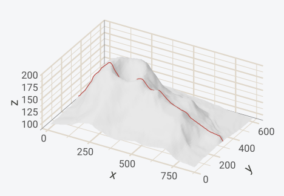
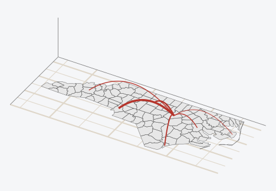
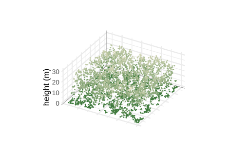
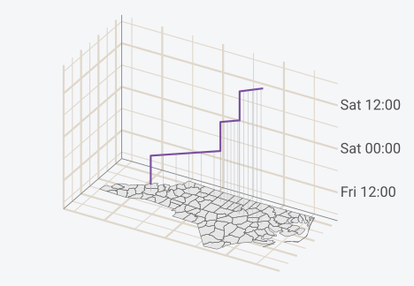
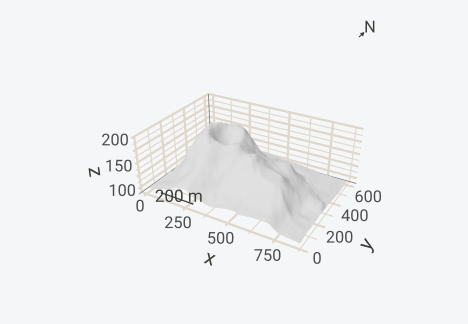

A map has two coordinates, and a third axis can carry a value measured at each place: terrain height, a count per region, a time stamp. ggplot3d reads the usual spatial objects directly. terra and stars rasters become height surfaces, sf simple features become markers, paths, flat polygons or prisms, and lidR point clouds become data frames of points. All four packages are optional. Installation is covered in Get started.
Planar drawing needs planar coordinates. Data in longitude and
latitude are reprojected to the coordinate reference system (CRS) given
by coord_3d(crs = ), which must be a projected one; data
that are already projected are drawn in their own units.
Terrain from a raster
geom_spatraster_3d() draws each layer of a raster as a
surface through its cell centres, with height and fill taken from the
cell values. Large rasters are resampled to a regular sample of about
maxcell cells first. The elevation raster shipped with
terra covers Luxembourg in longitude and latitude, so it is reprojected
to the Luxembourg grid (EPSG:2169).
elevation <- terra::rast(system.file("ex/elev.tif", package = "terra"))
ggplot() +
geom_spatraster_3d(data = elevation, maxcell = 4000) +
scale_fill_gradient(low = "#3F7A3D", high = "#E8E2C8", na.value = NA) +
scale_z_continuous(name = "elevation (m)") + labs(x = NULL, y = NULL) +
coord_3d(crs = 2169, aspect = c(1, 1.4, 0.35), axes = "z")
Missing cells, here outside the border, leave holes. The same raster
also works as ordinary data: fortify() returns one row per
cell with x, y, value and
lyr columns, so any layer that takes x/y/z data can draw
it.
A stars object uses the same height-surface layer. Convert a small part of the built-in volcano matrix to a stars array; its horizontal positions are matrix-cell coordinates. Each band becomes a separate surface, with the computed layer name available for grouping or faceting.
terrain_stars <- stars::st_as_stars(volcano[seq(1, 87, by = 3), seq(1, 61, by = 3)])
ggplot() + geom_spatraster_3d(data = terrain_stars, maxcell = 700) +
scale_fill_gradient(low = "#3F7A3D", high = "#E8E2C8") +
labs(z = "height (m)") + coord_3d(aspect = c(1.4, 1, 0.7))
The regular cell sample controls the amount of geometry drawn. Fortifying the raster directly returns its full resolution. See geom_spatraster_3d() for raster inputs and the computed values.
Prism maps
Simple features keep their attributes, so any column can be mapped.
geom_sf_3d() lays polygons on the floor of the box; mapping
height raises each one into a prism. The counties of North
Carolina, with the number of births in 1974 as height:
nc <- sf::st_read(system.file("shape/nc.shp", package = "sf"), quiet = TRUE)
ggplot(nc) +
geom_sf_3d(aes(height = BIR74 / 1000, fill = BIR74), colour = "white", linewidth = 0.1) +
scale_fill_gradient(low = "#C9D9E6", high = "#2E6F9E") +
scale_z_continuous(name = "births (1000s)") + labs(x = NULL, y = NULL) +
coord_3d(crs = 32119, aspect = c(4, 1.6, 1), elevation = 40, axes = "z",
backend = backend_3d("raster", dpi = 144))
Prisms of detailed outlines can contain many faces. Output backends explains how to render them at
a chosen image resolution. Plain ggplot2::geom_sf() layers
are drawn the same way inside coord_3d(); add the 3D
coordinates last so they supply the plot’s final coordinate system.
Cross-sections and fence diagrams
A cross-section is the vertical slice of a surface along a line.
stat_profile_3d() samples the surface along one or more
lines and draws the wall between the surface and a base. The surface is
interpolated on the same triangles the surface layer draws, so the top
of each wall lies on the drawn surface. With several lines this is a
fence diagram, as used for geological sections.
volcano_grid <- expand.grid(x = seq_len(nrow(volcano)) * 10, y = seq_len(ncol(volcano)) * 10)
volcano_grid$z <- as.vector(volcano)
sections <- data.frame(x = c(100, 800, 450, 450), y = c(300, 300, 50, 600),
group = c(1, 1, 2, 2))
ggplot(volcano_grid, aes(x, y, z = z)) +
geom_surface_3d(fill = "grey80", alpha = 0.35) +
stat_profile_3d(line = sections, base = 90, fill = "#9E5E0F", colour = "grey20") +
labs(z = "height (m)") +
coord_3d(aspect = c(870, 610, 300))
The computed distance gives the position along each
line; with geom = ggplot2::GeomPath the stat draws the
profile line itself.
Heights stored in simple features
An XYZ geometry stores height as its third coordinate. Build a three-dimensional line through one row of the volcano grid, preserving the measured elevation at each vertex. These are local coordinates in metres. The line and surface share those coordinates.
ridge <- subset(volcano_grid, y == 300)
ridge <- ridge[order(ridge$x), ]
xyz <- sf::st_sf(geometry = sf::st_sfc(
sf::st_linestring(as.matrix(ridge[c("x", "y", "z")]))))
ggplot(volcano_grid, aes(x, y, z = z)) +
geom_surface_3d(fill = "grey85") +
geom_sf_3d(data = xyz, inherit.aes = FALSE,
colour = "#B5342B", linewidth = 1) +
coord_3d(aspect = c(870, 610, 300))
Points and lines with stored Z coordinates use their own heights. A flat polygon can receive a mapped height to become a prism. Geographic inputs need a projected target coordinate reference system, as in the county map. See geom_sf_3d() for geometry and height mappings.
Flows over a map
geom_arc_3d() joins two places by a raised arc, as in
flow maps. Each arc rises by height times its horizontal
length, so long flows arch higher. Without z, arcs start on the floor of
the box, where a map lies.
nc_m <- sf::st_transform(nc, 32119)
centres <- unname(sf::st_coordinates(sf::st_point_on_surface(sf::st_geometry(nc_m))))
hub <- which(nc$NAME == "Wake")
targets <- match(c("Buncombe", "Mecklenburg", "New Hanover", "Pitt", "Guilford", "Dare"), nc$NAME)
flows <- data.frame(x = centres[hub, 1], y = centres[hub, 2],
xend = centres[targets, 1], yend = centres[targets, 2],
volume = c(2, 6, 3, 2, 4, 1))
ggplot() +
geom_sf_3d(data = nc_m, fill = "grey92", colour = "grey60", linewidth = 0.1) +
geom_arc_3d(aes(x, y, xend = xend, yend = yend, linewidth = volume),
data = flows, colour = "#B5342B", height = 0.25) +
scale_linewidth(range = c(0.4, 1.6)) +
labs(x = NULL, y = NULL) +
coord_3d(aspect = c(4, 1.6, 0.8), elevation = 35, axes = character(), panes = "floor")
Point clouds
Airborne laser scanning records millions of points on ground and
vegetation. lidR reads them as LAS objects;
fortify() turns one into a data frame with x,
y, z, intensity,
classification and the other point attributes. A thinned
sample of a mixed conifer stand, coloured by height:
set.seed(8)
las <- lidR::readLAS(system.file("extdata", "MixedConifer.laz", package = "lidR"),
filter = "-keep_random_fraction 0.1")
points <- fortify(las)
ggplot(points, aes(x, y, z = z, colour = z)) +
geom_point_3d(size = 0.3) +
scale_colour_gradient(low = "#3F7A3D", high = "#E8E2C8") +
labs(x = NULL, y = NULL, z = "height (m)") +
coord_3d(aspect = c(1, 1, 0.45), axes = "z")
For dense clouds, geom_point_3d(render = "splat") with
the raster backend draws the points as depth-tested spheres (see Output backends).
The space-time cube
Hägerstrand’s space-time cube shows a movement as a path through two
dimensions of space and one of time: time runs up the vertical axis, so
a stay at one place is a vertical segment and fast travel is a nearly
flat one. With a date-time z, the track draws over a floor map and
scale_z_datetime() labels the axis. The track below is
simulated: a trip across North Carolina with stops at three towns.
towns <- centres[match(c("Buncombe", "Guilford", "Wake", "Pitt"), nc$NAME), ]
start <- as.POSIXct("2026-05-01 06:00", tz = "UTC")
legs <- lapply(1:3, function(i) {
s <- seq(0, 1, length.out = 12)
rbind(data.frame(x = towns[i, 1], y = towns[i, 2], hours = c(0, 8)),
data.frame(x = towns[i, 1] + s * (towns[i + 1, 1] - towns[i, 1]),
y = towns[i, 2] + s * (towns[i + 1, 2] - towns[i, 2]),
hours = 8 + 4 * s))
})
track <- do.call(rbind, Map(function(leg, i) transform(leg, hours = hours + 12 * (i - 1)), legs, 1:3))
track$time <- start + track$hours * 3600
ggplot(track, aes(x, y, z = time)) +
geom_sf_3d(data = nc_m, inherit.aes = FALSE, fill = "grey92", colour = "grey60", linewidth = 0.1) +
geom_dropline_3d(data = track[c(TRUE, FALSE), ], colour = "grey70", linewidth = 0.2) +
geom_path_3d(colour = "#7A4F9E", linewidth = 1) +
scale_z_datetime(date_labels = "%a %H:%M") +
labs(x = NULL, y = NULL, z = NULL) +
coord_3d(aspect = c(4, 1.6, 2), elevation = 20, axes = "z", panes = c("back", "floor"))
The track uses the same projected coordinates as the map,
nc_m. A track recorded in longitude and latitude is
projected first with sf::st_transform(), so both share one
coordinate system.
Scale bars and north arrows
annotation_scale_3d() lays a scale bar in a coordinate
plane, so it shortens with perspective like the data around it, and
annotation_north_3d() points along the direction given as
north. Both belong with projected coordinates in metres.
ggplot(volcano_grid, aes(x, y, z = z)) +
geom_surface_3d(fill = "grey80", colour = NA) +
annotation_scale_3d(length = 200, unit = "m", size = 5) +
annotation_north_3d(north = c(0, 1, 0)) +
coord_3d(aspect = c(870, 610, 300), projection = "perspective")